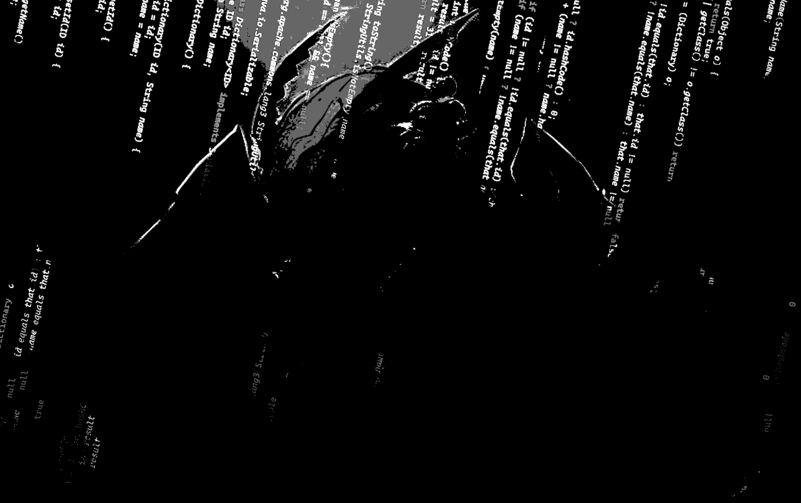
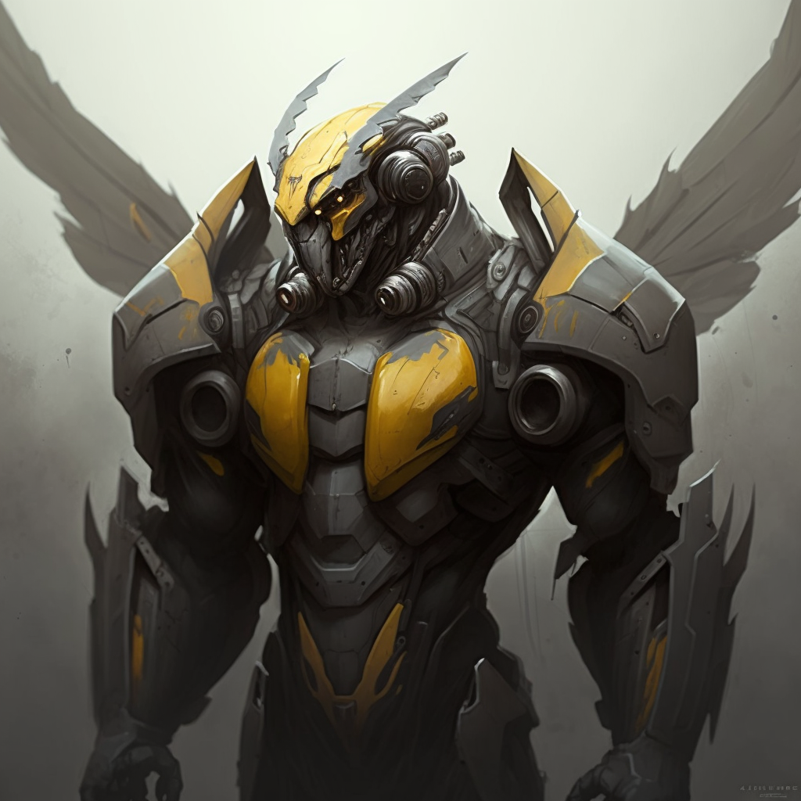
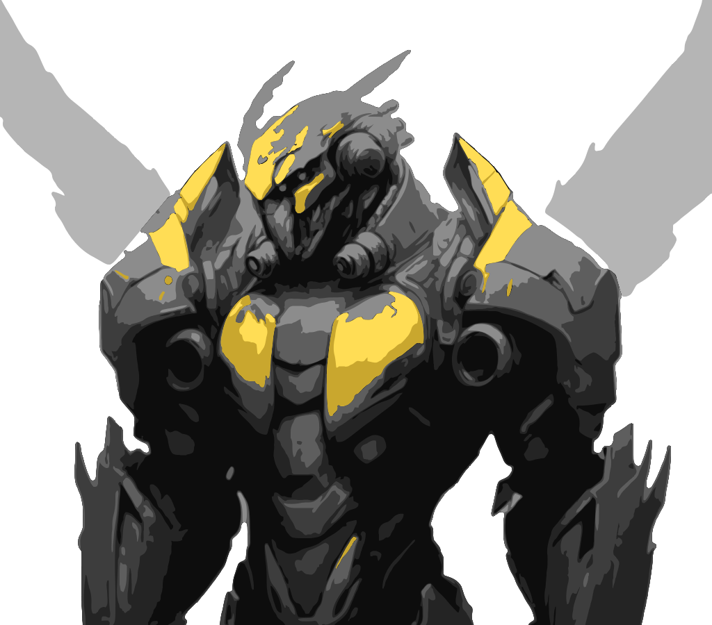
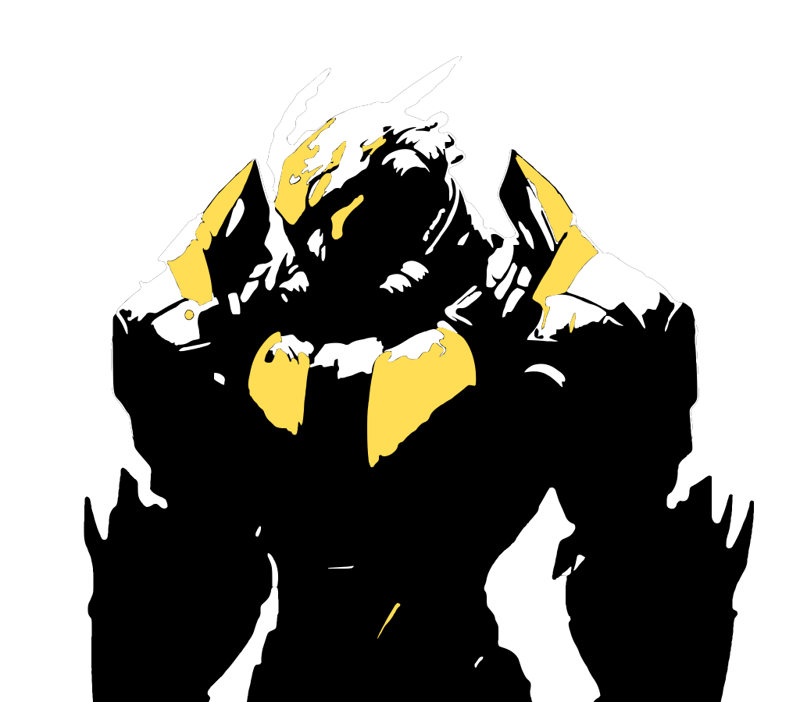

Каждый вариант: мелко (16–64 px), средне (240 px) и во всю ширину — на чёрном, жёлтом и белом.
Оригинал: подложка старого логотипа, 1285×808 · 204 КБ

Оригинал: робот, 1024×1024 · 1072 КБ

Автотрассировка старой подложки (vtracer, 3 тона, растр ×3 + сглаживание), вместе с кодом · 364 КБ, 908 контуров, 19332 узлов
Робот целиком из robot.png: 5 серых тонов + жёлтый + крылья (vtracer по слоям) · 337 КБ, 204 контуров, 13983 узлов

Робот целиком, строгая палитра: чёрный, #FFDD55, белый (vtracer по слоям) · 73 КБ, 58 контуров, 3093 узлов

Одноцветный силуэт с вырезами (currentColor); на чёрном показан инвертированным · 30 КБ, 2 контуров, 1113 узлов